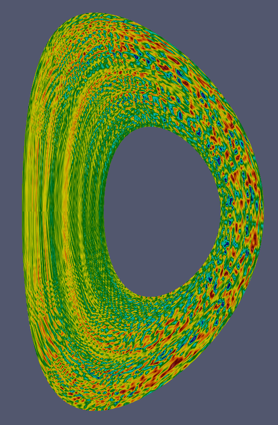

Copyright © 2014 Ferdinand van Wyk
Learn how to make a website like this here.
Icons made by Elegant Themes, Freepik from www.flaticon.com
I am the author of or actively contribute to the following codes.
gs2_correlation is a comprehensive correlation analysis tool of GS2 fluctuations such as electrostatic potential φ, density, temperature etc. The most readily compared with experiment are density fluctuation measurements, since the Beam Emission Spectrometer (BES) diagnostic is able to directly measure density fluctuations in experiments. The analysis produces a statistical measures of radial and poloidal correlation lengths as well as correlation times of density fluctuations. A very similar analysis is applied to experimental BES data making comparisons possible. The images below show density fluctuations, radial and poloidal correlation functions, and the time correlation analysis procedure.
CodeRunner is an extensive framework for running, organizing and analyzing simulations originally written by Edmund Highcock. CodeRunner automatically produces input files, organizes simulation folders, and analyzes the output. Owing to its modular structure (through CodeRunner Modules) CodeRunner can be customized to work on any system and with any simulation code.
The code is open source and available on GitHub here.
CodeRunner can also simply be installed as a Ruby package from here.
GS2CRMOD is the CodeRunner module which allows CodeRunner to interact with the local gyrokinetic code GS2 also originally written by Edmund Highcock. This module contains information specific to GS2 such as input parameters and simulation output contains routines for plotting and analyzing GS2 output automatically.
The code is open source and available on GitHub here.
CodeRunner can also simply be installed as a Ruby package from here.
GS2 is a highly scalable plasma turbulence simulation code for simulating plasmas in full toroidal geometry. GS2 is a local code, meaning simulates in a domain where parameters and gradients are fixed values. The code takes these local parameters and evolves the distribution function of one or more kinetic species in time according to the gyrokinetic equation.
The image to the left shows density fluctuations (blue = low density, red = high density) in a slice though the torus as culculated by GS2. Since GS2 is a local code, it does not actually use this as the simulation domain but is reconstructed in post-processing.
The main purpose of GS2 is to calculate the fluxes of particles, momentum, and heat radially out of the plasma given a set of local parameters such as temperature and density gradients, flows, and geometric description (defining the shape of the plasma).
The wiki can be found here.
Copyright © 2014 Ferdinand van Wyk
Learn how to make a website like this here.
Icons made by Elegant Themes, Freepik from www.flaticon.com